01 · 基础边框与底色条
组件 · 边框 / 底色 / 文字容器 / 引用
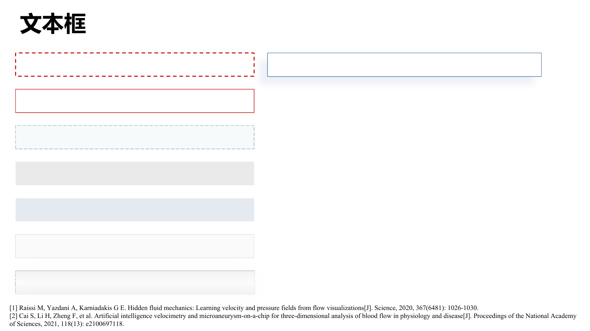
可取用：虚实边框、浅色底条、阴影条
用途：需要组织正文或制作结论条时选一个容器语法。
这是基础件陈列，不是完整页面。不要复制底部小字号参考文献作为默认字号。
原生定位
slide_id=257 · ppt/slides/slide1.xml
02 · 图片与贴合图注
结构单元 · 图片 / 图注 / 标题条
可取用：左：图片、外框、底部图注条；右：地图与底部贴合图注
用途：让图注与图片作为一个整体移动、缩放、对齐。
图的内容仅为来源示例，复用时替换为当前任务证据。
原生定位
slide_id=269 · ppt/slides/slide2.xml
03 · 图文证据与局部结论
结构单元 · 标题框 / 政策背景 / 图文 / 结论条
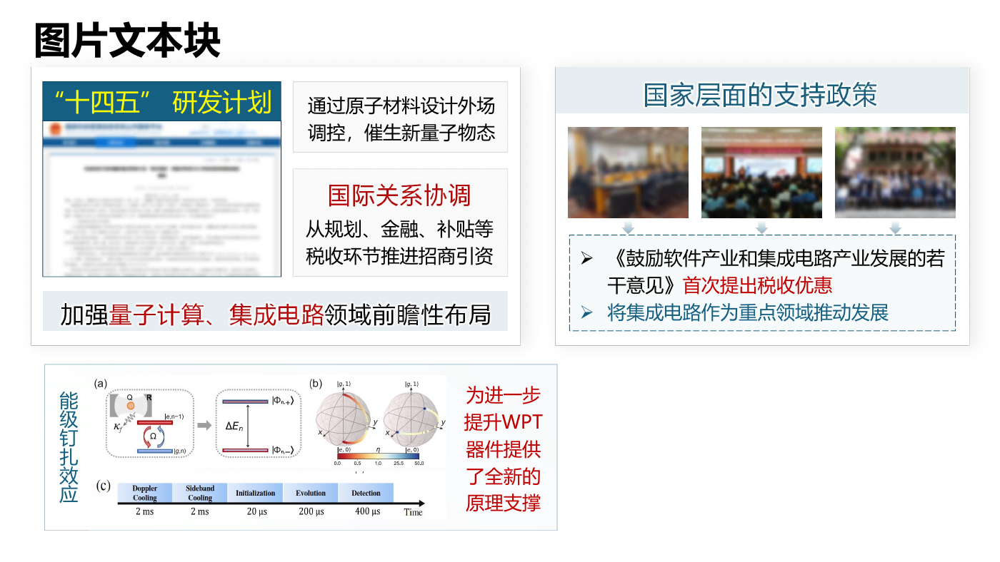
可取用：左上：标题、文件图、两个说明区、底部总结；右上：区域标题、多图、解释区；左下：竖向标题、机制图、右侧解释
用途：支持背景证据、图解加说明、同题多证据。
三块是不同来源的独立样例，不能自动视为同一页的论证链。
原生定位
slide_id=261 · ppt/slides/slide3.xml
04 · 图像标注与方法解释
结构单元 · 标注 / 图文 / 框标题 / 方法 / 公式
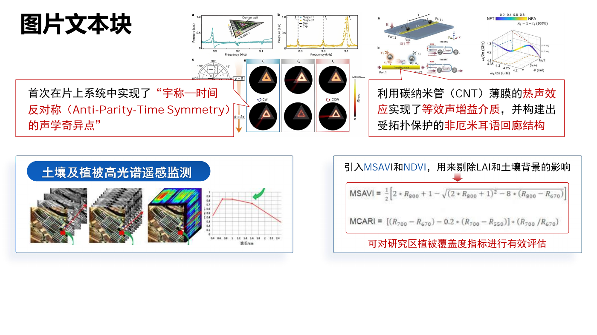
可取用：上：图片与连线关联的解释框；左下：标题条、复合图片、外框；右下：方法说明、公式证据、局部结论
用途：需要把图中局部特征和解释绑定；或解释一种方法。
说明箭头只连接真正对应的证据；密集图片标注要放大后复核。
原生定位
slide_id=263 · ppt/slides/slide4.xml
05 · 标题嵌入框沿的证据区
结构单元 · 标题框 / 图表 / 方法 / 结果 / 题引
可取用：上：出处封面与问题文字组合；下：框沿标题、左图表、右结论及方法说明
用途：优先参考下方单元，用于实验曲线与方法/结论的配对。
上下是两个素材样例；不要照抄其互不相干的内容形成整页。
原生定位
slide_id=265 · ppt/slides/slide5.xml
06 · 原理单元与方法总分区
结构单元 · 标题框 / 原理 / 方法 / 总分 / 图文
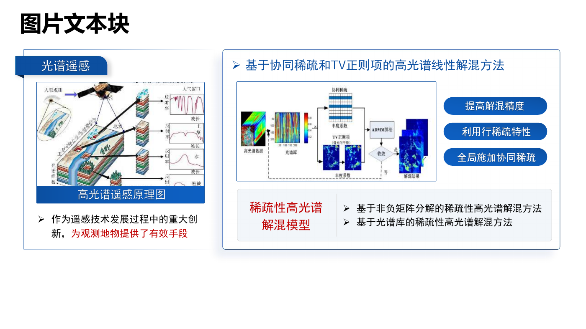
可取用：左：凸出标题条、原理图、图注、说明；右：方法标题、主流程图、特性说明、底部方法分类
用途：表达原理说明，或一个方法下的证据与子方法。
左右仅供选用；当前页面是否存在原理到方法关系，要由新内容决定。
原生定位
slide_id=267 · ppt/slides/slide6.xml
07 · 证据解释区与纵向步骤
结构单元 · 标题框 / 证据链 / 纵向流程 / 图表
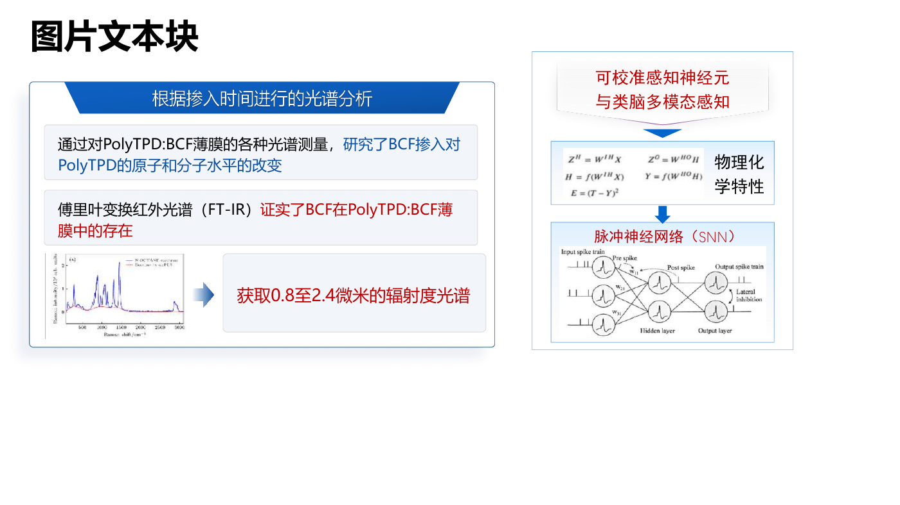
可取用：左：宽标题带、说明条、图表与解释；右：上层概念、物理特性、神经网络的纵向串联
用途：实验结果的证据链，或有方向的处理/推导顺序。
流程箭头意味着真实依赖，不能把普通并列关系画成因果。
原生定位
slide_id=268 · ppt/slides/slide7.xml
08 · 标题框变体与双图对照
结构单元 · 标题框 / 占位容器 / 双图对照 / 图文结论
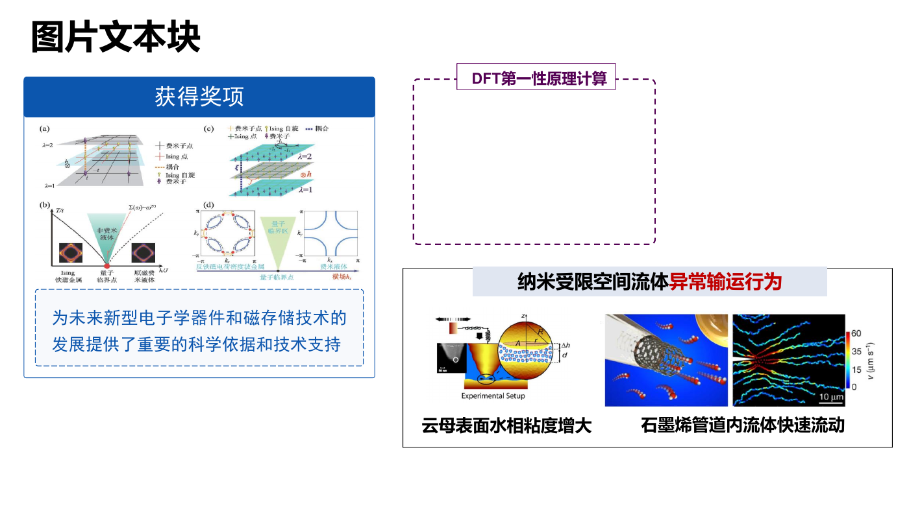
可取用：左：整宽色带标题、图片、底部结论框；右上：白底标题压在虚线框沿；右下：跨框标题、两张图片、各自图注
用途：图文结论区域或两对象/两种现象的对照；右上可作为空容器组件。
空容器是库中素材，不是未完成工作；复用成报告时需填入有效内容。三种样式需择一统一。
原生定位
slide_id=271 · ppt/slides/slide8.xml
09 · 图片局部标注
结构单元 · 图片 / 标注 / 引线 / 解释
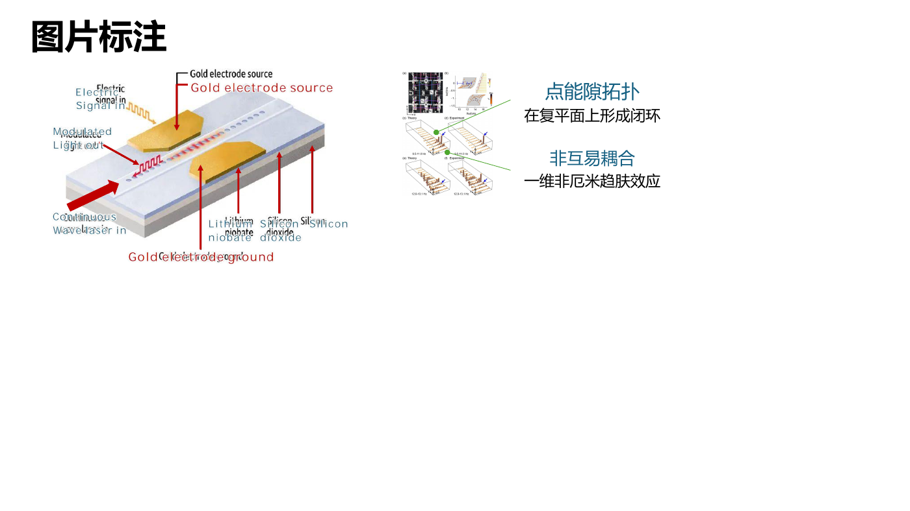
可取用：左：器件示意图与分部引线；右：复合图与两组局部解释
用途：把局部构件、性质、结果与图上位置绑定。
透明文本框在这里有明确图像归属，允许使用；核对原始英文和标签后再用。
原生定位
slide_id=262 · ppt/slides/slide9.xml
10 · 逻辑连接与命名结论条
组件 · 逻辑 / 箭头 / 问题 / 关键点 / 结论条
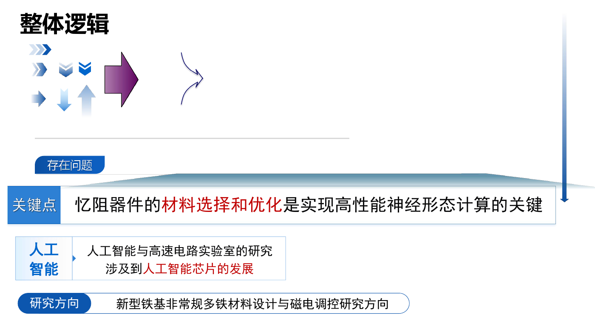
可取用：上：箭头、汇聚线等连接件；中下：问题标签、关键点条、主题解释条、研究方向条
用途：在已有清晰逻辑的区域之间建立连接，或收束一页的关键点。
这是连接件和总结条拼盘，不是自带完整逻辑的成品页。
原生定位
slide_id=264 · ppt/slides/slide10.xml
11 · 多阶段过程与时间轴
页面逻辑 · 流程 / 时间轴 / 阶段 / 总览
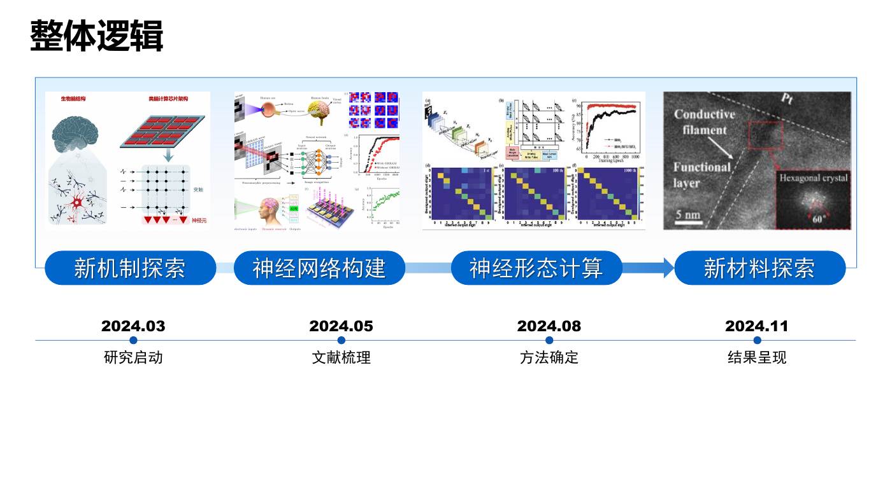
可取用：上：四个有标题的图文阶段及连接；下：里程碑日期与阶段说明
用途：研究路线、工作计划、分阶段进展。按实际阶段数增删。
两个结构可分别取用；只有时间节点确实对应时才组合，不能固定每次四阶段。
原生定位
slide_id=270 · ppt/slides/slide11.xml
12 · 指标集合与约束说明
结构单元 · 指标集合 / 结果 / 约束 / 条件 / 标题框
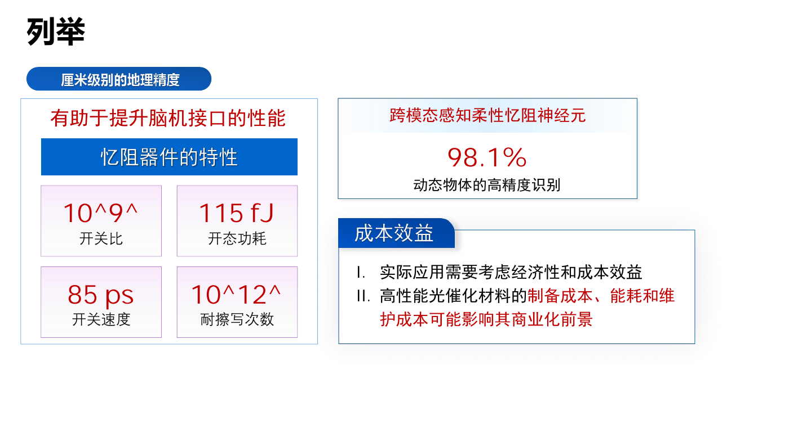
可取用：左：题头、总标题、四个指标小单元；右上：结果数据与含义；右下：标题嵌框的成本约束说明
用途：多个同类指标的汇总，或结果与限制并列呈现。
照样例复制大号红色数值会违背用户当前数字同档偏好；保留集合关系、改用一致字号。
原生定位
slide_id=266 · ppt/slides/slide12.xml
13 · 双证据区域汇聚共同结论
页面逻辑 · 文献综述 / 双证据 / 汇聚 / 研究缺口
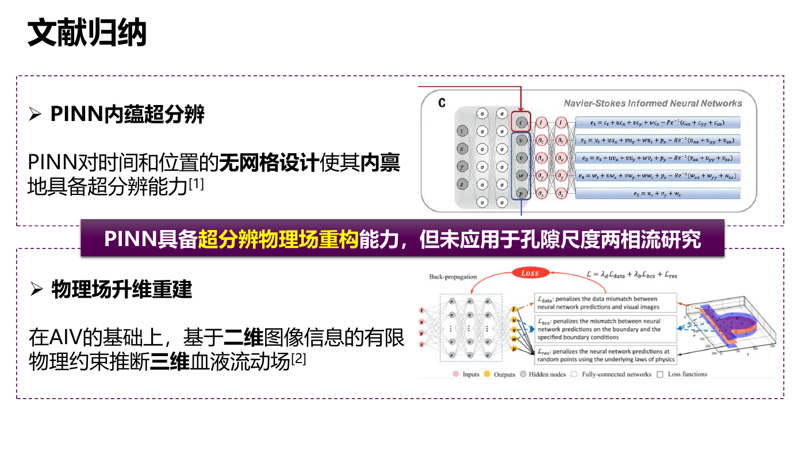
可取用：上：标题、文字判断、对应证据图；下：另一标题、文字判断、对应证据图；中：跨区域的共同结论条
用途：两项文献/实验支撑同一认识，再据证据明确研究问题。
结论条覆盖留白而不能遮证据；来源中“未应用于某研究”的判断必须独立核实，不能从样式继承。
原生定位
slide_id=258 · ppt/slides/slide13.xml